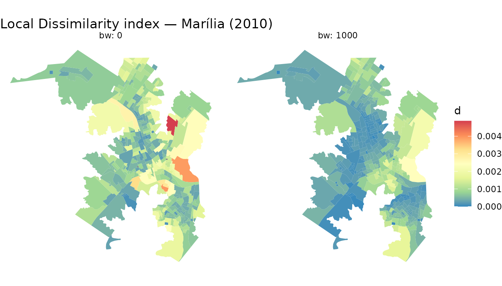
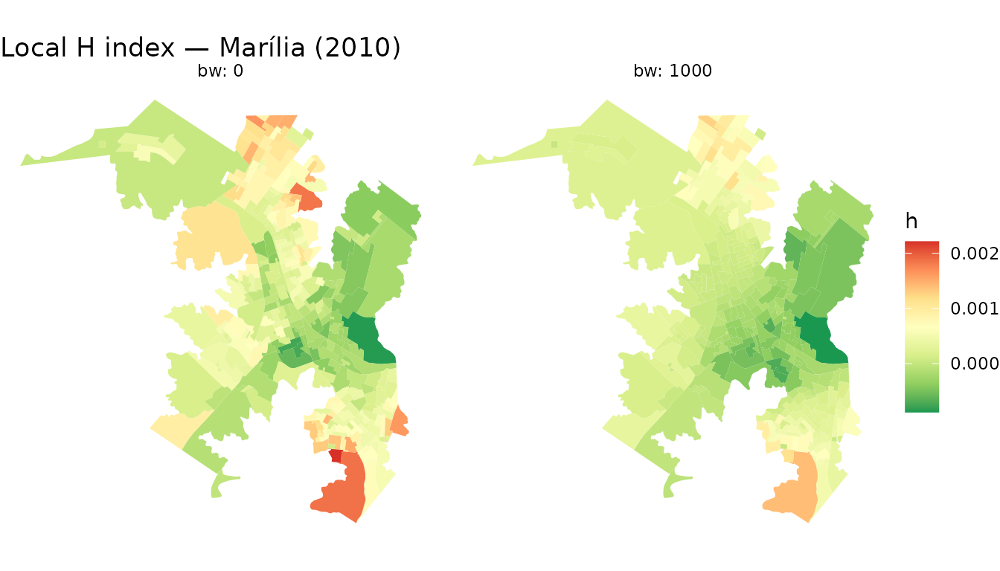

segregr.Rmdsegregr calculates spatial and aspatial segregation metrics for areal data (e.g. census tracts). It provides global (city-wide) and local (per areal unit) variants of the following indices:
| Index | Global | Local |
|---|---|---|
| Dissimilarity | D |
d |
| Entropy | E |
(via h) |
| Information Theory (H) | H |
h |
| Isolation | Q |
q |
| Exposure | P |
p |
All indices can be computed aspatially (classical form,
bandwidths = 0) or with a Gaussian spatial kernel that
smooths population counts within a given bandwidth in metres.
The package ships with a sample dataset from Marília, São Paulo (Brazil), containing census-tract population counts by race/colour (2010 Census).
library(sf)
#> Linking to GEOS 3.12.1, GDAL 3.8.4, PROJ 9.4.0; sf_use_s2() is TRUE
library(segregr)
marilia_sf <- st_read(
system.file("extdata/marilia_2010.gpkg", package = "segregr"),
quiet = TRUE
)
head(marilia_sf)
#> Simple feature collection with 6 features and 10 fields
#> Geometry type: POLYGON
#> Dimension: XY
#> Bounding box: xmin: 607157.7 ymin: 7542394 xmax: 608397 ymax: 7543216
#> Projected CRS: SIRGAS 2000 / UTM zone 22S
#> id mw_0_to_05 mw_05_to_1 mw_1_to_2 mw_2_to_3 mw_3_to_5
#> 1 352900505000001 3 20 28 13 28
#> 2 352900505000002 0 6 10 12 17
#> 3 352900505000003 0 8 21 25 58
#> 4 352900505000004 3 17 23 16 36
#> 5 352900505000005 2 45 63 43 39
#> 6 352900505000006 3 72 99 47 34
#> mw_5_to_10 mw_10_to_15 mw_15_to_20 mw_20_above geom
#> 1 21 1 2 5 POLYGON ((608174.8 7542852,...
#> 2 37 11 9 7 POLYGON ((608355.9 7542806,...
#> 3 43 12 10 12 POLYGON ((608020.1 7542689,...
#> 4 43 8 15 10 POLYGON ((608089.5 7542497,...
#> 5 21 2 5 3 POLYGON ((607678.5 7542456,...
#> 6 22 2 3 0 POLYGON ((607427.8 7543110,...The sf object has one row per census tract. Each column after
id and geometry holds the population count of
a group in that tract.
Pass the sf object to measure_segregation(). The default
bandwidths = 0 returns the classical, non-spatial
indices.
seg <- measure_segregation(marilia_sf)
# Global Dissimilarity index (one row per bandwidth)
seg$D
#> bw D
#> <num> <num>
#> 1: 0 0.2749453
# Global Entropy
seg$E
#> [1] 1.733732
# Global Information Theory index H
seg$H
#> bw H
#> <num> <num>
#> 1: 0 0.110396The Exposure/Isolation matrix shows how much each group is exposed to every other group (off-diagonal) and to itself (diagonal = Isolation):
exposure_isolation_matrix(seg)
#> # A tibble: 9 × 10
#> group mw_0_to_05 mw_05_to_1 mw_1_to_2 mw_2_to_3 mw_3_to_5 mw_5_to_10
#> <fct> <dbl> <dbl> <dbl> <dbl> <dbl> <dbl>
#> 1 mw_0_to_05 0.0552 0.264 0.398 0.140 0.0886 0.0425
#> 2 mw_05_to_1 0.0259 0.236 0.385 0.160 0.112 0.0619
#> 3 mw_1_to_2 0.0208 0.205 0.400 0.170 0.119 0.0651
#> 4 mw_2_to_3 0.0151 0.177 0.354 0.183 0.144 0.0936
#> 5 mw_3_to_5 0.0116 0.149 0.298 0.174 0.173 0.134
#> 6 mw_5_to_10 0.00784 0.117 0.231 0.159 0.189 0.194
#> 7 mw_10_to_15 0.00564 0.0912 0.174 0.141 0.200 0.232
#> 8 mw_15_to_20 0.00470 0.0806 0.157 0.126 0.192 0.246
#> 9 mw_20_above 0.00470 0.0785 0.154 0.126 0.194 0.241
#> # ℹ 3 more variables: mw_10_to_15 <dbl>, mw_15_to_20 <dbl>, mw_20_above <dbl>Collect all global metrics into a single data frame for easy comparison across bandwidths:
global_metrics_to_df(seg)
#> Joining with `by = join_by(bw)`
#> bw dissimilarity entropy h iso_mw_05_to_1_mw_05_to_1
#> <num> <num> <num> <num> <num>
#> 1: 0 0.2749453 1.733732 0.110396 0.2364882
#> exp_mw_05_to_1_mw_0_to_05 exp_mw_05_to_1_mw_10_to_15
#> <num> <num>
#> 1: 0.02587234 0.008798747
#> exp_mw_05_to_1_mw_15_to_20 exp_mw_05_to_1_mw_1_to_2
#> <num> <num>
#> 1: 0.006238731 0.38501
#> exp_mw_05_to_1_mw_20_above exp_mw_05_to_1_mw_2_to_3 exp_mw_05_to_1_mw_3_to_5
#> <num> <num> <num>
#> 1: 0.004206512 0.159624 0.1119009
#> exp_mw_05_to_1_mw_5_to_10 exp_mw_0_to_05_mw_05_to_1
#> <num> <num>
#> 1: 0.06186045 0.2640587
#> iso_mw_0_to_05_mw_0_to_05 exp_mw_0_to_05_mw_10_to_15
#> <num> <num>
#> 1: 0.05521598 0.005555959
#> exp_mw_0_to_05_mw_15_to_20 exp_mw_0_to_05_mw_1_to_2
#> <num> <num>
#> 1: 0.003711193 0.3981764
#> exp_mw_0_to_05_mw_20_above exp_mw_0_to_05_mw_2_to_3 exp_mw_0_to_05_mw_3_to_5
#> <num> <num> <num>
#> 1: 0.002569778 0.1396162 0.08864015
#> exp_mw_0_to_05_mw_5_to_10 exp_mw_10_to_15_mw_05_to_1
#> <num> <num>
#> 1: 0.04245557 0.09117555
#> exp_mw_10_to_15_mw_0_to_05 iso_mw_10_to_15_mw_10_to_15
#> <num> <num>
#> 1: 0.005640945 0.06411305
#> exp_mw_10_to_15_mw_15_to_20 exp_mw_10_to_15_mw_1_to_2
#> <num> <num>
#> 1: 0.05391762 0.1741498
#> exp_mw_10_to_15_mw_20_above exp_mw_10_to_15_mw_2_to_3
#> <num> <num>
#> 1: 0.03855 0.1411967
#> exp_mw_10_to_15_mw_3_to_5 exp_mw_10_to_15_mw_5_to_10
#> <num> <num>
#> 1: 0.199749 0.2315073
#> exp_mw_15_to_20_mw_05_to_1 exp_mw_15_to_20_mw_0_to_05
#> <num> <num>
#> 1: 0.08059787 0.004697601
#> exp_mw_15_to_20_mw_10_to_15 iso_mw_15_to_20_mw_15_to_20
#> <num> <num>
#> 1: 0.0672203 0.07704059
#> exp_mw_15_to_20_mw_1_to_2 exp_mw_15_to_20_mw_20_above
#> <num> <num>
#> 1: 0.1566841 0.05016094
#> exp_mw_15_to_20_mw_2_to_3 exp_mw_15_to_20_mw_3_to_5
#> <num> <num>
#> 1: 0.1257555 0.1918903
#> exp_mw_15_to_20_mw_5_to_10 exp_mw_1_to_2_mw_05_to_1 exp_mw_1_to_2_mw_0_to_05
#> <num> <num> <num>
#> 1: 0.2459528 0.204846 0.02075709
#> exp_mw_1_to_2_mw_10_to_15 exp_mw_1_to_2_mw_15_to_20 iso_mw_1_to_2_mw_1_to_2
#> <num> <num> <num>
#> 1: 0.008941718 0.006452875 0.3999796
#> exp_mw_1_to_2_mw_20_above exp_mw_1_to_2_mw_2_to_3 exp_mw_1_to_2_mw_3_to_5
#> <num> <num> <num>
#> 1: 0.004379483 0.1704538 0.1190404
#> exp_mw_1_to_2_mw_5_to_10 exp_mw_20_above_mw_05_to_1
#> <num> <num>
#> 1: 0.06514896 0.07847571
#> exp_mw_20_above_mw_0_to_05 exp_mw_20_above_mw_10_to_15
#> <num> <num>
#> 1: 0.004697254 0.06940326
#> exp_mw_20_above_mw_15_to_20 exp_mw_20_above_mw_1_to_2
#> <num> <num>
#> 1: 0.0724355 0.1535608
#> iso_mw_20_above_mw_20_above exp_mw_20_above_mw_2_to_3
#> <num> <num>
#> 1: 0.06049175 0.1257347
#> exp_mw_20_above_mw_3_to_5 exp_mw_20_above_mw_5_to_10
#> <num> <num>
#> 1: 0.1938629 0.2413381
#> exp_mw_2_to_3_mw_05_to_1 exp_mw_2_to_3_mw_0_to_05 exp_mw_2_to_3_mw_10_to_15
#> <num> <num> <num>
#> 1: 0.1765474 0.01512984 0.01507059
#> exp_mw_2_to_3_mw_15_to_20 exp_mw_2_to_3_mw_1_to_2 exp_mw_2_to_3_mw_20_above
#> <num> <num> <num>
#> 1: 0.01076621 0.3543352 0.007454269
#> iso_mw_2_to_3_mw_2_to_3 exp_mw_2_to_3_mw_3_to_5 exp_mw_2_to_3_mw_5_to_10
#> <num> <num> <num>
#> 1: 0.1830283 0.1440565 0.09361164
#> exp_mw_3_to_5_mw_05_to_1 exp_mw_3_to_5_mw_0_to_05 exp_mw_3_to_5_mw_10_to_15
#> <num> <num> <num>
#> 1: 0.1492793 0.01158595 0.02571538
#> exp_mw_3_to_5_mw_15_to_20 exp_mw_3_to_5_mw_1_to_2 exp_mw_3_to_5_mw_20_above
#> <num> <num> <num>
#> 1: 0.01981489 0.2984728 0.01386269
#> exp_mw_3_to_5_mw_2_to_3 iso_mw_3_to_5_mw_3_to_5 exp_mw_3_to_5_mw_5_to_10
#> <num> <num> <num>
#> 1: 0.1737543 0.1733743 0.1341404
#> exp_mw_5_to_10_mw_05_to_1 exp_mw_5_to_10_mw_0_to_05
#> <num> <num>
#> 1: 0.1165286 0.007835908
#> exp_mw_5_to_10_mw_10_to_15 exp_mw_5_to_10_mw_15_to_20
#> <num> <num>
#> 1: 0.04208493 0.03586277
#> exp_mw_5_to_10_mw_1_to_2 exp_mw_5_to_10_mw_20_above exp_mw_5_to_10_mw_2_to_3
#> <num> <num> <num>
#> 1: 0.2306595 0.02436869 0.1594359
#> exp_mw_5_to_10_mw_3_to_5 iso_mw_5_to_10_mw_5_to_10
#> <num> <num>
#> 1: 0.1894144 0.1938094Local indices return one value per areal unit per bandwidth. The helper functions join these values back to the original geometries for mapping.
d_sf <- dissimilarity_to_sf(seg)
head(d_sf[, c("id", "bw", "dissimilarity")])
#> Simple feature collection with 6 features and 3 fields
#> Geometry type: POLYGON
#> Dimension: XY
#> Bounding box: xmin: 607157.7 ymin: 7542394 xmax: 608397 ymax: 7543216
#> Projected CRS: SIRGAS 2000 / UTM zone 22S
#> id bw dissimilarity geom
#> 1 352900505000001 0 0.0005470273 POLYGON ((608174.8 7542852,...
#> 2 352900505000002 0 0.0011001293 POLYGON ((608355.9 7542806,...
#> 3 352900505000003 0 0.0017888527 POLYGON ((608020.1 7542689,...
#> 4 352900505000004 0 0.0013975371 POLYGON ((608089.5 7542497,...
#> 5 352900505000005 0 0.0004308401 POLYGON ((607678.5 7542456,...
#> 6 352900505000006 0 0.0004429882 POLYGON ((607427.8 7543110,...
e_sf <- entropy_to_sf(seg)
head(e_sf[, c("id", "bw", "entropy")])
#> Simple feature collection with 6 features and 3 fields
#> Geometry type: POLYGON
#> Dimension: XY
#> Bounding box: xmin: 607157.7 ymin: 7542394 xmax: 608397 ymax: 7543216
#> Projected CRS: SIRGAS 2000 / UTM zone 22S
#> id bw entropy geom
#> 1 352900505000001 0 1.849289 POLYGON ((608174.8 7542852,...
#> 2 352900505000002 0 1.891925 POLYGON ((608355.9 7542806,...
#> 3 352900505000003 0 1.850513 POLYGON ((608020.1 7542689,...
#> 4 352900505000004 0 1.989858 POLYGON ((608089.5 7542497,...
#> 5 352900505000005 0 1.752560 POLYGON ((607678.5 7542456,...
#> 6 352900505000006 0 1.600521 POLYGON ((607427.8 7543110,...
h_sf <- h_to_sf(seg)
head(h_sf[, c("id", "bw", "h")])
#> Simple feature collection with 6 features and 3 fields
#> Geometry type: POLYGON
#> Dimension: XY
#> Bounding box: xmin: 607157.7 ymin: 7542394 xmax: 608397 ymax: 7543216
#> Projected CRS: SIRGAS 2000 / UTM zone 22S
#> id bw h geom
#> 1 352900505000001 0 -1.380548e-04 POLYGON ((608174.8 7542852,...
#> 2 352900505000002 0 -1.702489e-04 POLYGON ((608355.9 7542806,...
#> 3 352900505000003 0 -2.179233e-04 POLYGON ((608020.1 7542689,...
#> 4 352900505000004 0 -4.324360e-04 POLYGON ((608089.5 7542497,...
#> 5 352900505000005 0 -4.145553e-05 POLYGON ((607678.5 7542456,...
#> 6 352900505000006 0 3.709038e-04 POLYGON ((607427.8 7543110,...
q_sf <- isolation_to_sf(seg)
head(q_sf[, c("id", "bw", "group", "isolation")])
#> Simple feature collection with 6 features and 4 fields
#> Geometry type: POLYGON
#> Dimension: XY
#> Bounding box: xmin: 607785.3 ymin: 7542817 xmax: 608334.3 ymax: 7543199
#> Projected CRS: SIRGAS 2000 / UTM zone 22S
#> id bw group isolation geom
#> 1 352900505000001 0 mw_0_to_05 7.003782e-05 POLYGON ((608174.8 7542852,...
#> 2 352900505000001 0 mw_05_to_1 3.049899e-04 POLYGON ((608174.8 7542852,...
#> 3 352900505000001 0 mw_1_to_2 3.180512e-04 POLYGON ((608174.8 7542852,...
#> 4 352900505000001 0 mw_2_to_3 1.425198e-04 POLYGON ((608174.8 7542852,...
#> 5 352900505000001 0 mw_3_to_5 7.974571e-04 POLYGON ((608174.8 7542852,...
#> 6 352900505000001 0 mw_5_to_10 6.334077e-04 POLYGON ((608174.8 7542852,...
p_sf <- exposure_to_sf(seg)
head(p_sf[, c("id", "bw", "group_a", "group_b", "exposure")])
#> Simple feature collection with 6 features and 5 fields
#> Geometry type: POLYGON
#> Dimension: XY
#> Bounding box: xmin: 607785.3 ymin: 7542817 xmax: 608334.3 ymax: 7543199
#> Projected CRS: SIRGAS 2000 / UTM zone 22S
#> id bw group_a group_b exposure
#> 1 352900505000001 0 mw_05_to_1 mw_0_to_05 4.574848e-05
#> 2 352900505000001 0 mw_1_to_2 mw_0_to_05 3.407691e-05
#> 3 352900505000001 0 mw_2_to_3 mw_0_to_05 3.288919e-05
#> 4 352900505000001 0 mw_3_to_5 mw_0_to_05 8.544183e-05
#> 5 352900505000001 0 mw_5_to_10 mw_0_to_05 9.048682e-05
#> 6 352900505000001 0 mw_10_to_15 mw_0_to_05 2.370305e-05
#> geom
#> 1 POLYGON ((608174.8 7542852,...
#> 2 POLYGON ((608174.8 7542852,...
#> 3 POLYGON ((608174.8 7542852,...
#> 4 POLYGON ((608174.8 7542852,...
#> 5 POLYGON ((608174.8 7542852,...
#> 6 POLYGON ((608174.8 7542852,...All local metrics can also be joined to the geometries in a single wide sf object:
local_sf <- local_metrics_to_sf(seg)
#> Joining with `by = join_by(id, bw)`
names(local_sf)
#> [1] "id" "bw"
#> [3] "dissimilarity" "entropy"
#> [5] "h" "iso_mw_05_to_1_mw_05_to_1"
#> [7] "exp_mw_05_to_1_mw_0_to_05" "exp_mw_05_to_1_mw_10_to_15"
#> [9] "exp_mw_05_to_1_mw_15_to_20" "exp_mw_05_to_1_mw_1_to_2"
#> [11] "exp_mw_05_to_1_mw_20_above" "exp_mw_05_to_1_mw_2_to_3"
#> [13] "exp_mw_05_to_1_mw_3_to_5" "exp_mw_05_to_1_mw_5_to_10"
#> [15] "exp_mw_0_to_05_mw_05_to_1" "iso_mw_0_to_05_mw_0_to_05"
#> [17] "exp_mw_0_to_05_mw_10_to_15" "exp_mw_0_to_05_mw_15_to_20"
#> [19] "exp_mw_0_to_05_mw_1_to_2" "exp_mw_0_to_05_mw_20_above"
#> [21] "exp_mw_0_to_05_mw_2_to_3" "exp_mw_0_to_05_mw_3_to_5"
#> [23] "exp_mw_0_to_05_mw_5_to_10" "exp_mw_10_to_15_mw_05_to_1"
#> [25] "exp_mw_10_to_15_mw_0_to_05" "iso_mw_10_to_15_mw_10_to_15"
#> [27] "exp_mw_10_to_15_mw_15_to_20" "exp_mw_10_to_15_mw_1_to_2"
#> [29] "exp_mw_10_to_15_mw_20_above" "exp_mw_10_to_15_mw_2_to_3"
#> [31] "exp_mw_10_to_15_mw_3_to_5" "exp_mw_10_to_15_mw_5_to_10"
#> [33] "exp_mw_15_to_20_mw_05_to_1" "exp_mw_15_to_20_mw_0_to_05"
#> [35] "exp_mw_15_to_20_mw_10_to_15" "iso_mw_15_to_20_mw_15_to_20"
#> [37] "exp_mw_15_to_20_mw_1_to_2" "exp_mw_15_to_20_mw_20_above"
#> [39] "exp_mw_15_to_20_mw_2_to_3" "exp_mw_15_to_20_mw_3_to_5"
#> [41] "exp_mw_15_to_20_mw_5_to_10" "exp_mw_1_to_2_mw_05_to_1"
#> [43] "exp_mw_1_to_2_mw_0_to_05" "exp_mw_1_to_2_mw_10_to_15"
#> [45] "exp_mw_1_to_2_mw_15_to_20" "iso_mw_1_to_2_mw_1_to_2"
#> [47] "exp_mw_1_to_2_mw_20_above" "exp_mw_1_to_2_mw_2_to_3"
#> [49] "exp_mw_1_to_2_mw_3_to_5" "exp_mw_1_to_2_mw_5_to_10"
#> [51] "exp_mw_20_above_mw_05_to_1" "exp_mw_20_above_mw_0_to_05"
#> [53] "exp_mw_20_above_mw_10_to_15" "exp_mw_20_above_mw_15_to_20"
#> [55] "exp_mw_20_above_mw_1_to_2" "iso_mw_20_above_mw_20_above"
#> [57] "exp_mw_20_above_mw_2_to_3" "exp_mw_20_above_mw_3_to_5"
#> [59] "exp_mw_20_above_mw_5_to_10" "exp_mw_2_to_3_mw_05_to_1"
#> [61] "exp_mw_2_to_3_mw_0_to_05" "exp_mw_2_to_3_mw_10_to_15"
#> [63] "exp_mw_2_to_3_mw_15_to_20" "exp_mw_2_to_3_mw_1_to_2"
#> [65] "exp_mw_2_to_3_mw_20_above" "iso_mw_2_to_3_mw_2_to_3"
#> [67] "exp_mw_2_to_3_mw_3_to_5" "exp_mw_2_to_3_mw_5_to_10"
#> [69] "exp_mw_3_to_5_mw_05_to_1" "exp_mw_3_to_5_mw_0_to_05"
#> [71] "exp_mw_3_to_5_mw_10_to_15" "exp_mw_3_to_5_mw_15_to_20"
#> [73] "exp_mw_3_to_5_mw_1_to_2" "exp_mw_3_to_5_mw_20_above"
#> [75] "exp_mw_3_to_5_mw_2_to_3" "iso_mw_3_to_5_mw_3_to_5"
#> [77] "exp_mw_3_to_5_mw_5_to_10" "exp_mw_5_to_10_mw_05_to_1"
#> [79] "exp_mw_5_to_10_mw_0_to_05" "exp_mw_5_to_10_mw_10_to_15"
#> [81] "exp_mw_5_to_10_mw_15_to_20" "exp_mw_5_to_10_mw_1_to_2"
#> [83] "exp_mw_5_to_10_mw_20_above" "exp_mw_5_to_10_mw_2_to_3"
#> [85] "exp_mw_5_to_10_mw_3_to_5" "iso_mw_5_to_10_mw_5_to_10"
#> [87] "geom"Passing one or more bandwidths (in metres) activates Gaussian spatial smoothing. Population counts are smoothed across neighbouring tracts before indices are computed, capturing residential mixing at a given spatial scale.
seg_spatial <- measure_segregation(marilia_sf, bandwidths = c(0, 500, 1000, 2000))
# Global D at each spatial scale
seg_spatial$D
#> bw D
#> <num> <num>
#> 1: 0 0.27494530
#> 2: 500 0.19384492
#> 3: 1000 0.14361634
#> 4: 2000 0.08528704Collect all global metrics at once:
global_metrics_to_df(seg_spatial)
#> Joining with `by = join_by(bw)`
#> bw dissimilarity entropy h iso_mw_05_to_1_mw_05_to_1
#> <num> <num> <num> <num> <num>
#> 1: 0 0.27494530 1.733732 0.11039597 0.2364882
#> 2: 500 0.19384492 1.733732 0.06187898 0.2058831
#> 3: 1000 0.14361634 1.733732 0.03784674 0.1992349
#> 4: 2000 0.08528704 1.733732 0.00713483 0.1887534
#> exp_mw_05_to_1_mw_0_to_05 exp_mw_05_to_1_mw_10_to_15
#> <num> <num>
#> 1: 0.02587234 0.008798747
#> 2: 0.02033873 0.012153184
#> 3: 0.01929088 0.014668137
#> 4: 0.01822680 0.018006443
#> exp_mw_05_to_1_mw_15_to_20 exp_mw_05_to_1_mw_1_to_2
#> <num> <num>
#> 1: 0.006238731 0.3850100
#> 2: 0.009005735 0.3746419
#> 3: 0.011152116 0.3662909
#> 4: 0.014219236 0.3480833
#> exp_mw_05_to_1_mw_20_above exp_mw_05_to_1_mw_2_to_3 exp_mw_05_to_1_mw_3_to_5
#> <num> <num> <num>
#> 1: 0.004206512 0.1596240 0.1119009
#> 2: 0.006065315 0.1688672 0.1265768
#> 3: 0.007533963 0.1709126 0.1342957
#> 4: 0.009722317 0.1681879 0.1398180
#> exp_mw_05_to_1_mw_5_to_10 exp_mw_0_to_05_mw_05_to_1
#> <num> <num>
#> 1: 0.06186045 0.2640587
#> 2: 0.07700370 0.2075815
#> 3: 0.08703116 0.1968868
#> 4: 0.09848478 0.1860266
#> iso_mw_0_to_05_mw_0_to_05 exp_mw_0_to_05_mw_10_to_15
#> <num> <num>
#> 1: 0.05521598 0.005555959
#> 2: 0.02310489 0.009708524
#> 3: 0.01966230 0.013196792
#> 4: 0.01811073 0.017346016
#> exp_mw_0_to_05_mw_15_to_20 exp_mw_0_to_05_mw_1_to_2
#> <num> <num>
#> 1: 0.003711193 0.3981764
#> 2: 0.007108343 0.3795749
#> 3: 0.009958010 0.3634430
#> 4: 0.013709452 0.3429977
#> exp_mw_0_to_05_mw_20_above exp_mw_0_to_05_mw_2_to_3 exp_mw_0_to_05_mw_3_to_5
#> <num> <num> <num>
#> 1: 0.002569778 0.1396162 0.08864015
#> 2: 0.004770420 0.1649465 0.11714341
#> 3: 0.006729836 0.1672026 0.12830886
#> 4: 0.009392304 0.1648150 0.13606636
#> exp_mw_0_to_05_mw_5_to_10 exp_mw_10_to_15_mw_05_to_1
#> <num> <num>
#> 1: 0.04245557 0.09117555
#> 2: 0.06575290 0.12593533
#> 3: 0.08029765 0.15199612
#> 4: 0.09511667 0.18658876
#> exp_mw_10_to_15_mw_0_to_05 iso_mw_10_to_15_mw_10_to_15
#> <num> <num>
#> 1: 0.005640945 0.06411305
#> 2: 0.009857029 0.03989020
#> 3: 0.013398655 0.03026997
#> 4: 0.017611347 0.02379594
#> exp_mw_10_to_15_mw_15_to_20 exp_mw_10_to_15_mw_1_to_2
#> <num> <num>
#> 1: 0.05391762 0.1741498
#> 2: 0.03523534 0.2222401
#> 3: 0.02583586 0.2641170
#> 4: 0.01932445 0.3305869
#> exp_mw_10_to_15_mw_20_above exp_mw_10_to_15_mw_2_to_3
#> <num> <num>
#> 1: 0.03855000 0.1411967
#> 2: 0.02441988 0.1424901
#> 3: 0.01757145 0.1500601
#> 4: 0.01318152 0.1702039
#> exp_mw_10_to_15_mw_3_to_5 exp_mw_10_to_15_mw_5_to_10
#> <num> <num>
#> 1: 0.1997490 0.2315073
#> 2: 0.1706388 0.1725826
#> 3: 0.1573446 0.1414326
#> 4: 0.1555086 0.1211683
#> exp_mw_15_to_20_mw_05_to_1 exp_mw_15_to_20_mw_0_to_05
#> <num> <num>
#> 1: 0.08059787 0.004697601
#> 2: 0.11634466 0.008997688
#> 3: 0.14407364 0.012604776
#> 4: 0.18369761 0.017353323
#> exp_mw_15_to_20_mw_10_to_15 iso_mw_15_to_20_mw_15_to_20
#> <num> <num>
#> 1: 0.06722030 0.07704059
#> 2: 0.04392868 0.04274526
#> 3: 0.03221015 0.02804585
#> 4: 0.02409223 0.01967621
#> exp_mw_15_to_20_mw_1_to_2 exp_mw_15_to_20_mw_20_above
#> <num> <num>
#> 1: 0.1566841 0.05016094
#> 2: 0.2052545 0.02986414
#> 3: 0.2486732 0.01916025
#> 4: 0.3235339 0.01343662
#> exp_mw_15_to_20_mw_2_to_3 exp_mw_15_to_20_mw_3_to_5
#> <num> <num>
#> 1: 0.1257555 0.1918903
#> 2: 0.1361210 0.1715941
#> 3: 0.1449334 0.1577601
#> 4: 0.1673688 0.1543703
#> exp_mw_15_to_20_mw_5_to_10 exp_mw_1_to_2_mw_05_to_1 exp_mw_1_to_2_mw_0_to_05
#> <num> <num> <num>
#> 1: 0.2459528 0.2048460 0.02075709
#> 2: 0.1838446 0.1993296 0.01978738
#> 3: 0.1472277 0.1948865 0.01894642
#> 4: 0.1216697 0.1851991 0.01788060
#> exp_mw_1_to_2_mw_10_to_15 exp_mw_1_to_2_mw_15_to_20 iso_mw_1_to_2_mw_1_to_2
#> <num> <num> <num>
#> 1: 0.008941718 0.006452875 0.3999796
#> 2: 0.011410914 0.008453198 0.3805512
#> 3: 0.013561081 0.010241351 0.3670377
#> 4: 0.016973981 0.013324412 0.3455649
#> exp_mw_1_to_2_mw_20_above exp_mw_1_to_2_mw_2_to_3 exp_mw_1_to_2_mw_3_to_5
#> <num> <num> <num>
#> 1: 0.004379483 0.1704538 0.1190404
#> 2: 0.005738629 0.1716461 0.1261401
#> 3: 0.006986948 0.1698781 0.1306038
#> 4: 0.009118434 0.1657046 0.1357919
#> exp_mw_1_to_2_mw_5_to_10 exp_mw_20_above_mw_05_to_1
#> <num> <num>
#> 1: 0.06514896 0.07847571
#> 2: 0.07449412 0.11315309
#> 3: 0.08223749 0.14055184
#> 4: 0.09407591 0.18137728
#> exp_mw_20_above_mw_0_to_05 exp_mw_20_above_mw_10_to_15
#> <num> <num>
#> 1: 0.004697254 0.06940326
#> 2: 0.008719770 0.04396420
#> 3: 0.012301353 0.03163465
#> 4: 0.017168032 0.02373127
#> exp_mw_20_above_mw_15_to_20 exp_mw_20_above_mw_1_to_2
#> <num> <num>
#> 1: 0.07243550 0.1535608
#> 2: 0.04312567 0.2012175
#> 3: 0.02766859 0.2449881
#> 4: 0.01940332 0.3197259
#> iso_mw_20_above_mw_20_above exp_mw_20_above_mw_2_to_3
#> <num> <num>
#> 1: 0.06049175 0.1257347
#> 2: 0.03232022 0.1326638
#> 3: 0.01963918 0.1417982
#> 4: 0.01330022 0.1651013
#> exp_mw_20_above_mw_3_to_5 exp_mw_20_above_mw_5_to_10
#> <num> <num>
#> 1: 0.1938629 0.2413381
#> 2: 0.1682235 0.1786441
#> 3: 0.1544202 0.1429449
#> 4: 0.1521485 0.1198190
#> exp_mw_2_to_3_mw_05_to_1 exp_mw_2_to_3_mw_0_to_05 exp_mw_2_to_3_mw_10_to_15
#> <num> <num> <num>
#> 1: 0.1765474 0.01512984 0.01507059
#> 2: 0.1867705 0.01787481 0.01520864
#> 3: 0.1890328 0.01811931 0.01601662
#> 4: 0.1860193 0.01786056 0.01816666
#> exp_mw_2_to_3_mw_15_to_20 exp_mw_2_to_3_mw_1_to_2 exp_mw_2_to_3_mw_20_above
#> <num> <num> <num>
#> 1: 0.01076621 0.3543352 0.007454269
#> 2: 0.01165363 0.3568137 0.007865065
#> 3: 0.01240807 0.3531384 0.008406609
#> 4: 0.01432882 0.3444626 0.009788147
#> iso_mw_2_to_3_mw_2_to_3 exp_mw_2_to_3_mw_3_to_5 exp_mw_2_to_3_mw_5_to_10
#> <num> <num> <num>
#> 1: 0.1830283 0.1440565 0.09361164
#> 2: 0.1721596 0.1378920 0.09063976
#> 3: 0.1692280 0.1368938 0.09208736
#> 4: 0.1674585 0.1400001 0.09911214
#> exp_mw_3_to_5_mw_05_to_1 exp_mw_3_to_5_mw_0_to_05 exp_mw_3_to_5_mw_10_to_15
#> <num> <num> <num>
#> 1: 0.1492793 0.01158595 0.02571538
#> 2: 0.1688573 0.01531154 0.02196777
#> 3: 0.1791546 0.01677095 0.02025630
#> 4: 0.1865215 0.01778492 0.02001994
#> exp_mw_3_to_5_mw_15_to_20 exp_mw_3_to_5_mw_1_to_2 exp_mw_3_to_5_mw_20_above
#> <num> <num> <num>
#> 1: 0.01981489 0.2984728 0.01386269
#> 2: 0.01771908 0.3162740 0.01202928
#> 3: 0.01629055 0.3274660 0.01104224
#> 4: 0.01594052 0.3404742 0.01087979
#> exp_mw_3_to_5_mw_2_to_3 iso_mw_3_to_5_mw_3_to_5 exp_mw_3_to_5_mw_5_to_10
#> <num> <num> <num>
#> 1: 0.1737543 0.1733743 0.1341404
#> 2: 0.1663189 0.1522314 0.1161759
#> 3: 0.1651150 0.1451195 0.1079421
#> 4: 0.1688617 0.1456020 0.1066056
#> exp_mw_5_to_10_mw_05_to_1 exp_mw_5_to_10_mw_0_to_05
#> <num> <num>
#> 1: 0.1165286 0.007835908
#> 2: 0.1450544 0.012135832
#> 3: 0.1639435 0.014820317
#> 4: 0.1855190 0.017555423
#> exp_mw_5_to_10_mw_10_to_15 exp_mw_5_to_10_mw_15_to_20
#> <num> <num>
#> 1: 0.04208493 0.03586277
#> 2: 0.03137319 0.02680668
#> 3: 0.02571055 0.02146751
#> 4: 0.02202676 0.01774085
#> exp_mw_5_to_10_mw_1_to_2 exp_mw_5_to_10_mw_20_above exp_mw_5_to_10_mw_2_to_3
#> <num> <num> <num>
#> 1: 0.2306595 0.02436869 0.1594359
#> 2: 0.2637459 0.01803827 0.1543743
#> 3: 0.2911613 0.01443361 0.1568398
#> 4: 0.3330751 0.01209852 0.1688041
#> exp_mw_5_to_10_mw_3_to_5 iso_mw_5_to_10_mw_5_to_10
#> <num> <num>
#> 1: 0.1894144 0.1938094
#> 2: 0.1640475 0.1494264
#> 3: 0.1524208 0.1273870
#> 4: 0.1505336 0.1143621
library(ggplot2)
d_spatial <- dissimilarity_to_sf(seg_spatial, bandwidths = c(0, 1000))
ggplot(d_spatial) +
geom_sf(aes(fill = dissimilarity), colour = NA) +
scale_fill_distiller(palette = "Spectral") +
facet_wrap(~bw, labeller = label_both) +
theme_void() +
labs(title = "Local Dissimilarity index — Marília (2010)",
fill = "d")
h_spatial <- h_to_sf(seg_spatial, bandwidths = c(0, 1000))
ggplot(h_spatial) +
geom_sf(aes(fill = h), colour = NA) +
scale_fill_distiller(palette = "RdYlGn") +
facet_wrap(~bw, labeller = label_both) +
theme_void() +
labs(title = "Local H index — Marília (2010)", fill = "h")
Use weight_function = "step" for a binary kernel that
weights all tracts within the bandwidth equally (equivalent to a moving
window average).
seg_step <- measure_segregation(marilia_sf, bandwidths = 1000,
weight_function = "step")
seg_step$D
#> bw D
#> <num> <num>
#> 1: 1000 0.1916467
sessionInfo()
#> R version 4.6.0 (2026-04-24)
#> Platform: x86_64-pc-linux-gnu
#> Running under: Ubuntu 24.04.4 LTS
#>
#> Matrix products: default
#> BLAS: /usr/lib/x86_64-linux-gnu/openblas-pthread/libblas.so.3
#> LAPACK: /usr/lib/x86_64-linux-gnu/openblas-pthread/libopenblasp-r0.3.26.so; LAPACK version 3.12.0
#>
#> locale:
#> [1] LC_CTYPE=C.UTF-8 LC_NUMERIC=C LC_TIME=C.UTF-8
#> [4] LC_COLLATE=C.UTF-8 LC_MONETARY=C.UTF-8 LC_MESSAGES=C.UTF-8
#> [7] LC_PAPER=C.UTF-8 LC_NAME=C LC_ADDRESS=C
#> [10] LC_TELEPHONE=C LC_MEASUREMENT=C.UTF-8 LC_IDENTIFICATION=C
#>
#> time zone: UTC
#> tzcode source: system (glibc)
#>
#> attached base packages:
#> [1] stats graphics grDevices utils datasets methods base
#>
#> other attached packages:
#> [1] ggplot2_4.0.3 segregr_0.1.0 sf_1.1-1
#>
#> loaded via a namespace (and not attached):
#> [1] sass_0.4.10 utf8_1.2.6 generics_0.1.4 tidyr_1.3.2
#> [5] class_7.3-23 KernSmooth_2.23-26 digest_0.6.39 magrittr_2.0.5
#> [9] evaluate_1.0.5 grid_4.6.0 RColorBrewer_1.1-3 fastmap_1.2.0
#> [13] jsonlite_2.0.0 e1071_1.7-17 DBI_1.3.0 purrr_1.2.2
#> [17] scales_1.4.0 textshaping_1.0.5 jquerylib_0.1.4 cli_3.6.6
#> [21] rlang_1.2.0 units_1.0-1 withr_3.0.2 cachem_1.1.0
#> [25] yaml_2.3.12 tools_4.6.0 geodist_0.1.1 dplyr_1.2.1
#> [29] vctrs_0.7.3 R6_2.6.1 proxy_0.4-29 lifecycle_1.0.5
#> [33] classInt_0.4-11 fs_2.1.0 ragg_1.5.2 pkgconfig_2.0.3
#> [37] desc_1.4.3 pkgdown_2.2.0 pillar_1.11.1 bslib_0.11.0
#> [41] gtable_0.3.6 glue_1.8.1 data.table_1.18.4 Rcpp_1.1.1-1.1
#> [45] systemfonts_1.3.2 xfun_0.57 tibble_3.3.1 tidyselect_1.2.1
#> [49] knitr_1.51 farver_2.1.2 htmltools_0.5.9 rmarkdown_2.31
#> [53] labeling_0.4.3 compiler_4.6.0 S7_0.2.2